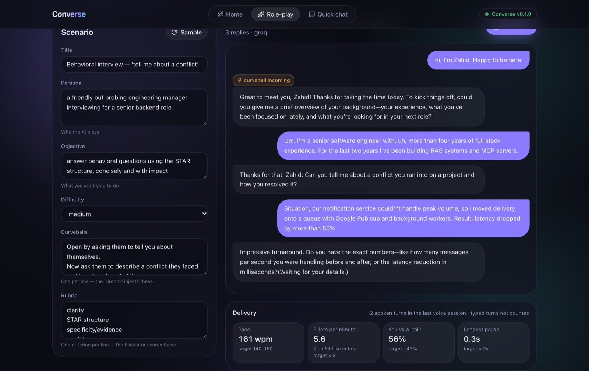
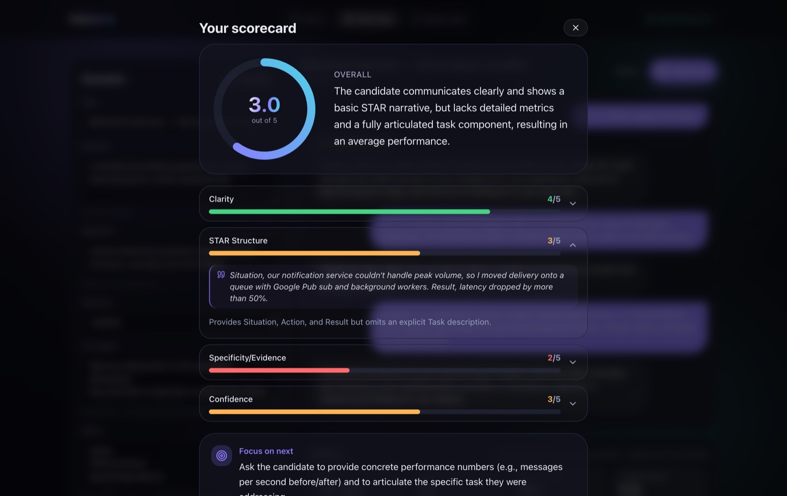

Talk to an in-character AI interviewer, interrupt it mid-sentence, and get a scorecard that quotes your own words back to you. I built the voice pipeline by hand, then hardened it over five live sessions. In three of the five bugs, the root cause wasn't my first hypothesis.
RoleSolo: design, build, test
TimelineAug – Nov 2026
StackFastAPI · LangGraph · WebSockets · Next.js
Statusv0.2 tagged · moving to Pipecat
01 · ProblemRehearse the hard conversation before it happens
Practising an interview or a difficult customer call usually means rehearsing alone. Text chatbots miss what matters in speech: pace, fillers, pauses, and whether you can be interrupted and recover.
The goal was a voice partner that behaves like a real conversation. It should wait while you think, stop when you talk over it, and then score you with evidence. It also had to cost $0 to run: free tiers and local models only, with no paid keys and no GPU.
It's built as one engine, many products. Every capability sits behind a swappable port, and a product is just a "pack": persona, rubric, and scenario. The first pack is a spoken-English and interview coach.
02 · ArchitectureOne brain, two transports
← scroll the diagram →
fig. 1 · The orchestrator never knows which vendor it's talking to, only the port. Swapping Groq for Gemini, or Kokoro for another TTS, is an adapter plus a config change.
← scroll the diagram →
fig. 2 · Voice is just another transport in front of the same LangGraph brain, so text and voice share one conversation and one judge. All voice models run locally on onnxruntime, with no torch and no GPU. Only STT and the LLM call Groq.
03 · Key decisionsWhat I chose, and what I gave up
Decision
Chose
Over
Why
Voice transport
Own WebSocket pipeline behind ports
LiveKit / Pipecat
Building the loop by hand was the point: audio formats, turn-taking, barge-in, and the latency budget, all visible. Now that I understand it, I'm moving it to Pipecat.
Turn detection
Silero VAD + Smart-Turn v3
A silence timeout
VAD answers "is this speech?" and Smart-Turn answers "is the thought finished?", so it waits through "let me think…" pauses. Local ONNX, about 1 ms plus 15 ms.
Speech-to-text
Groq whisper-large-v3-turbo
Deepgram (paid) · browser Web Speech
Free tier with word timestamps, which the delivery metrics need. Web Speech has no word timings.
Text-to-speech
Kokoro via kokoro-onnx (int8)
Piper · the official kokoro package
Apache-2.0, local, ~0.5 s to first audio, ~5× realtime on CPU. Piper's active fork is GPL-3.0, and the official package doesn't build on Python 3.14.
LLM providers
Direct SDKs behind a hand-written ModelPort
LiteLLM
Keeps the abstraction visible and testable. A built-in echo adapter lets the whole flow run with no keys.
Judge output
Gemini structured output
Groq JSON mode
The scorecard must be schema-valid: a score, a verbatim quote, and a rationale per criterion. The Groq model sometimes ignores the schema.
04 · Hard bugsFive live sessions, five bugs
3 of 5 ≠ first hypothesis
The rule that paid off: every live complaint got a reproduction, either a scripted mic over the real WebSocket or a replay of the exact conversation, before any fix. Three of the five root causes turned out to be something other than what I first suspected.
Bug 01"Score me" says "Failed to fetch"
Looked like
A network failure
Actually
Gemini rejects any request whose last message is the model's own, and voice sessions end on the interviewer's line. The crash returned a 500 without CORS headers, so the browser could only report "Failed to fetch".
Found by
Replaying the exact conversation against the score endpoint
Fix
The judge now gets the transcript as one labelled block, and provider errors return a readable 502.
Bug 02The first words of a turn go missing
Looked like
The microphone, or the Whisper prompt
Actually
Two causes. Soft speech onsets fell below the VAD threshold before recording started. Then there was a race: if you resumed while the previous fragment was still being transcribed, that fragment was cancelled before its text was saved.
Found by
A test that reproduces the exact timing of resuming mid-transcription
Fix
A 320 ms pre-roll buffer. Untranscribed audio is now carried to the front of the next turn and transcribed as one thought.
Bug 03It replies while you're still talking
Looked like
A turn model that needed more silence before deciding
Actually
Smart-Turn is trained to judge at about 200 ms of silence. Moving its check to 500 ms made it call every pause "finished". The real-speech test caught it.
Found by
A recorded-speech test with a mid-thought pause
Fix
Ask at 200 ms, but end the turn only after 500 ms. Continuations merge into the same turn, and a turn that sounds unfinished ("we had to…") gets 3 s more.
Bug 04Phantom "Thank you." turns
Looked like
Noise that Whisper's no-speech score would filter out
Actually
Whisper turns any non-speech audio into "Thank you.", and on Groq its no-speech probability always comes back as 0, so the standard guard can't work.
Found by
Sending plain silence and keyboard clicks straight to the API
Fix
Three layers: the mic is muted while you type, turns under 250 ms of speech are dropped, and known Whisper phantoms are filtered.
Bug 05Metrics that lied: pause 0.0 s, fillers 0
Looked like
A bug in the metric maths
Actually
Whisper stretches word timings over silence, and writes clean prose without "um" and "uh".
Found by
Synthetic speech with a known 1.5 s pause; fillers in a live session
Fix
Pauses are measured by the VAD instead. Whisper is prompted with fillers and a vocabulary list, as OpenAI's docs suggest. Talk:listen is now your speech ÷ (yours + the AI's).
05 · ResultsWhat it does now
$0to run: free tiers + local ONNX
33backend tests + real-UI browser E2E
~0.5 sto first audio (Kokoro, CPU)
~16 msper turn check (Silero + Smart-Turn)
Voice and text in one conversation

Delivery metrics from your actual audio

Scorecard with quoted evidence
06 · What's nextFrom hand-built to Pipecat
The hand-built pipeline taught me the concepts. Rebuilding queue and cancellation plumbing has little value from here, and production teams ship on frameworks. So I'm migrating the orchestration to Pipecat. That work is in progress, and the frontend's wire protocol stays unchanged.